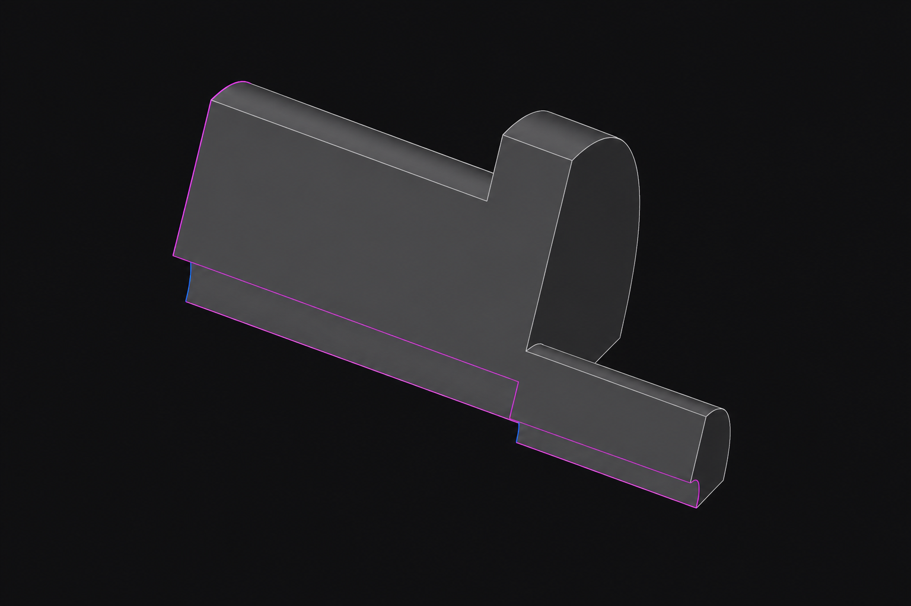
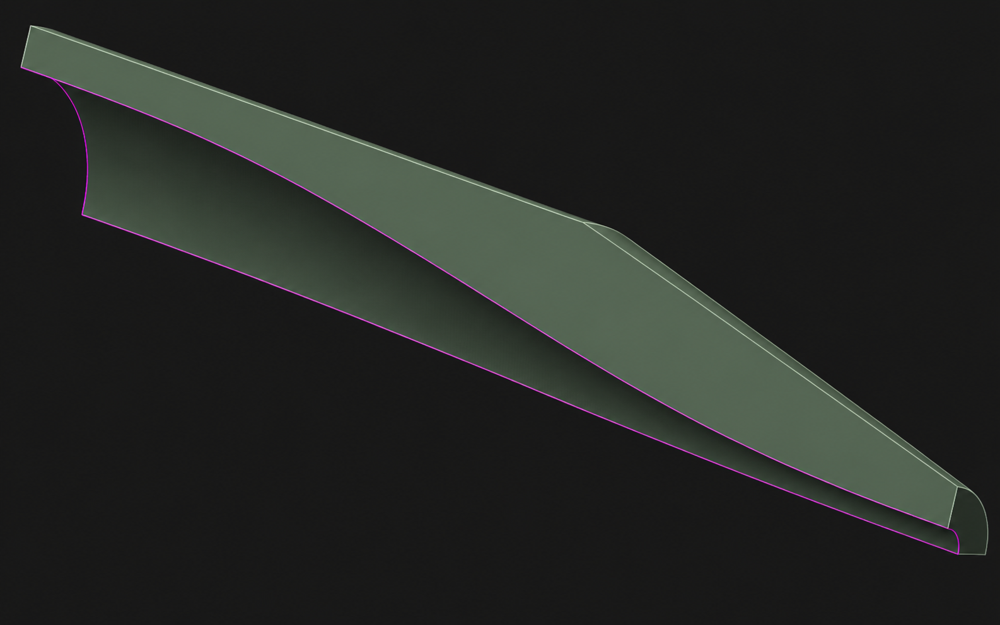

Problem statement
Why the Pulsatorn rig needed this reducer decision.
The Pulsatorn rig is a high-temperature dynamic pressure sensor calibration system used to reproduce gas-turbine-relevant thermal and pressure conditions before sensors are trusted in harsher test environments. The reducer sits between the heater outlet and downstream calibration section, so its geometry affects both pressure delivery and thermal delivery. The legacy reducer was a compact hydraulic fitting with abrupt contractions from 35.05 mm to 11.25 mm and then to 6.0 mm, a geometry expected to create irreversible Borda-Carnot losses, local acceleration and flow non-uniformity. The redesigned reducer used a 150 mm quintic C² contraction from the heater bore to the outlet. The engineering challenge was therefore not simply to make a smoother part, but to decide whether the redesign improves rig performance once compressible flow, heat transfer and practical insulation are interpreted together.
Research question
The technical question answered by the thesis.
Does the redesigned 150 mm quintic C² reducer geometry reduce pressure loss and deliver equivalent thermal performance compared with the legacy two-step fitting under steady-state compressible flow at T = 673 K and Pgauge = 100,000 Pa?
Design logic
From Borda-Carnot loss mechanism to C² contraction.
Geometry comparison — drag to reveal
Legacy two-step vs redesigned C² quintic reducer.
Both geometries connect the same heater bore (35.05 mm) to the same outlet (6.0 mm). The only variable is how the area change is distributed over length.


Methodology
CFD/CHT model structure and why the choices mattered.
Turbulence model
k-omega SST was chosen because the reducer problem combines near-wall sensitivity, adverse pressure-gradient risk and possible separation around abrupt contractions. It retains the near-wall strength of k-omega while blending toward k-epsilon-like behaviour away from the wall, making it more appropriate than a standard k-epsilon model for this confined, accelerating internal flow.
Near-wall strategy
The mesh used inflation layers and y+ monitoring so wall treatment remained consistent across geometries. The goal was not to tune a single local value, but to ensure the boundary layer was represented well enough that pressure loss, wall temperature and heat flux comparisons were not artifacts of near-wall resolution.
Mesh independence
A three-level mesh study compared coarse, baseline and fine grids. The baseline models used 829,621 legacy fluid cells and 913,301 redesigned fluid cells. Monitored quantities included mass flow, pressure drop, outlet temperature, maximum Mach number and velocity magnitude. Independence was judged by KPI stability across refinement levels, with baseline-to-fine changes below the 2% engineering threshold.
Simulation campaign
The campaign separated adiabatic flow physics from CHT thermal delivery. Adiabatic cases isolated pressure-loss and Mach-number behaviour across both geometries; six CHT cases then introduced solid conduction and external convection at outlet gauge pressures of 80,000 Pa, 40,000 Pa and 0 Pa while holding inlet conditions and material assumptions consistent.
Boundary conditions
Inlet temperature and pressure were set from rig-relevant operation: 673 K and 100 kPa gauge. Outlet gauge pressure levels represented downstream operating scenarios. Wall conditions separated insulated and uninsulated references, with external convection used to quantify heat rejection from exposed reducer area.
Convergence discipline
Residual reduction was treated as necessary but not sufficient. Integral monitors for mass balance, pressure drop, outlet temperature and maximum Mach number were followed to stable values before interpreting a case, which made the result set defensible beyond a visually converged residual plot.
Simulation visuals
From the ANSYS Fluent 2025 R1 campaign: mesh, flow field and solver output.
These are images from the actual thesis simulation campaign. Click any image to enlarge.
Numerical evidence dashboard
Exported thesis charts rebuilt as native portfolio evidence.
Hover over chart points or bars to inspect values; use Focus to expand a plot while reading.
ANSYS Fluent · three-level refinement
Mesh independence study
Why it matters
The baseline meshes were retained because the monitored engineering quantities were stable under refinement, including pressure drop, maximum Mach number and outlet temperature.
ANSYS Fluent 2025 R1 · residual histories
Solver convergence and monitor stability
Why it matters
Higher legacy turbulence residuals were interpreted with the flow field: the step geometry creates a stronger turbulent jet and vena-contracta region, while integral monitors for pressure drop, mass balance and outlet temperature stabilized.
Near-wall validation
Wall y+ distribution and wall-treatment credibility
Why it matters
The legacy y+ spike aligns with the abrupt step and vena-contracta region. The redesigned case rises more smoothly through the contraction, supporting a fair comparison of wall heat transfer trends.
Fine mesh · adiabatic centerline comparison
Flow profiles: Mach number and total pressure
Interpretation
These exported plots show the adiabatic centerline comparison case. The thesis report also records the most demanding near-choked CHT condition, where the redesigned case reached Ma = 0.990 and the legacy case reached Ma = 1.006. The wording is kept separate because the operating context and metric are not identical.
Legacy reducer diagnostic
The two-step fitting creates the pressure-loss mechanism
Interpretation
The local peak near the step is the numerical signature of the Borda-Carnot mechanism: a compact hydraulic fitting saves surface area but pays for it with irreversible flow loss.
CHT wall result
Wall temperature comparison
Interpretation
The legacy wall-temperature drop is concentrated around the step zone, while the redesigned reducer distributes cooling over the full 150 mm contraction.
Thermal resistance decomposition
Biot number, external heat loss and insulation reversal
Interpretation
The redesigned reducer has lower heat-loss intensity per unit area, but its much larger exposed area dominates the uninsulated thermal result. When the external loss path is removed, the outlet-temperature advantage reverses in favor of the redesigned reducer by 1.24 K.
Key findings
What the evidence says once the repeated wording is stripped out.
The strongest aerodynamic result is not a small incremental improvement but a change in flow behaviour: smoother acceleration, much lower total pressure loss, and no equivalent step-driven vena contracta.
The redesigned reducer loses more heat only when the external loss path is available. Once insulation removes that path, the internal convective picture reappears and the redesigned outlet becomes warmer.
The near-choked asymmetry matters because a local supersonic pocket in a nominally subcritical supply chain makes the rig more sensitive to downstream conditions and harder to interpret during sensor calibration.
Experimental phase
Measurement-chain commissioning and RCA kept the thesis tied to hardware.
The experimental phase involved commissioning a high-temperature measurement chain for planned validation at approximately 700°C. The chain combined thermocouple channels, pressure transducer inputs, NI-DAQ chassis configuration, NI MAX verification and LabVIEW VI modification for synchronized acquisition. The commissioning steps included channel identification, signal-path checks, unit and scaling verification, acquisition-loop validation and preparation for independent test campaigns.
When a heater failure interrupted sustained hot testing, the work shifted into formal root cause analysis rather than pretending the validation plan had simply disappeared. The RCA process considered instrumentation error, wiring/channel configuration, sensor placement, control logic, operating sequence and heater hardware condition. Hypotheses were eliminated by matching observed behaviour against channel checks, acquisition records and physical hardware evidence. The final confidence came from convergence between measurement-chain checks and hardware-level symptoms, leading to an approved scope revision: the thesis became a rigorous numerical study with experimental limitations explicitly documented.
Research-level conclusion
The recommendation is conditional, not cosmetic.
The redesigned C² reducer should be used when it can be insulated, because insulation preserves the aerodynamic gain while removing the thermal penalty created by the larger exposed surface area. Without insulation, the legacy reducer remains thermally competitive only for the wrong reason: compact geometry reduces external heat loss, even though the internal flow behaviour is inferior.
This is the most important scientific result of the thesis: pressure recovery and thermal delivery did not point in the same direction until the thermal resistance pathways were decomposed. The useful design decision came from explaining the trade-off, not from choosing the geometry that won a single metric.
Limitations and future work
Where the model is incomplete, and why that matters for PhD-level work.
Steady-state assumption
The model does not capture pulsating operation, thermal inertia, unsteady boundary-layer response or transient sensor-environment coupling. These are central to the real Pulsatorn operating context.
Simplified boundary conditions
Constant inlet conditions and idealized wall treatments simplify rig transients, heater behaviour, startup conditions and real insulation details.
Validation gap
The pressure-drop reduction is simulation-indicated, not experimentally verified. A repaired heater chain, calibrated pressure measurement and thermal mapping would be needed to close the loop.
Next investigation
The natural extension is transient CHT under pulsating flow, then reactive or deposition-aware wall modelling where surface condition evolves during operation.
That final extension connects directly to rocket cooling-channel research: both problems ask how high-temperature flow passages lose predictable heat-transfer behaviour when wall boundary conditions or surface condition change. In my thesis the surface-condition effect was geometric exposure and insulation; in catalytic pyrolysis it becomes coke deposition, roughness and added thermal resistance.